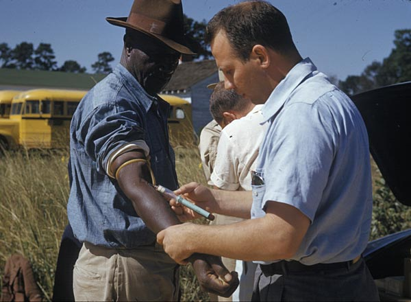
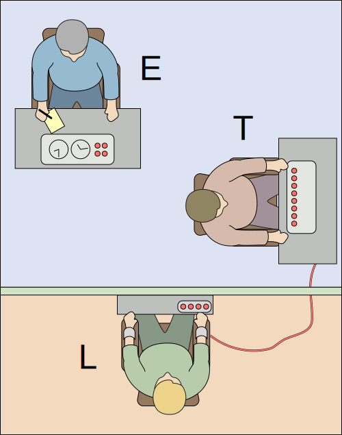

Last Week Review
Announcements and Due Dates
Keep turning in reading evidences if you are reading the textbook and taking good notes (which you should be doing either way!)
I have decided to open the weekly quiz questions for review, so you can review what you got right and wrong on each quiz and use it a study tool for the future
- DO NOT share these questions and answers with the public in any form or on any website - If I have any knowledge of this happening, I will close access to the entire class. Please keep your peers accountable so that you have this resource.
- We will continue to cover the most important corrections for difficult questions in class, and my email remains open for additional clarification.
- You will only be able to see what you got right, or wrong, AFTER ALL SUBMISSIONS have been turned in, grades have been posted, and we have reviewed the quiz in class.
I will have office hours again at 2:00pm - 5:00pm EST in AuSable 1307 on Friday 09/20/2024. Come stop by!
GVSU Annual Undergraduate Research Fair on Tuesday Oct 1st, 2024 at 2250 Kirkhof Center (Grand River Room) from 5:00pm - 7:00pm EST!
- This does fall during class time, so you’d only be able to attend the first bit
- Please see my class announcement on Blackboard for more information
Last Week Content
Types of variables and scales of measurement
3 types of claims: frequency, association, and causal
4 types of validity: construct, statistical, external, internal
Example of reading and critiquing a research article with the 4 validities and how the instructor approaches reading a scientific, empirical journal article
Quiz 2 Review
Areas for Review
Empirical research does have comparison groups and controls for confounds, which are the desirable traits which separate it from personal experience as a source for information.
- There are multiple causal explanations possible in personal experience, and which of those is true is unknown to us, hence why it is not a reliable source of information for claims.
Empirical research does reduce the chance of bias in our claims in our knowledge (which is why we use it in the first place), but it does not completely eliminate bias.
- Remember the bias blind spot, even researchers have bias and must admit to it.
- Intuition is generally more biased than empirical research (see availability heuristic, etc.)
- Researchers can most certainly be biased in selection of methods and literature.
The bias blind spot is when a person (falsely) believes they are immune to bias due to scientific training.
- Cherry-picking evidence is more associated with confirmation bias.
- Being convinced of a good story is primarily related to narrative bias.
The three inferior sources of information to empirical research (as discussed in class) are personal experience, authority, and intuition.
A meta-analysis is a type of literature review article, and can be viewed as a quantitative extension of a literature review
A confound is something that makes it difficult to determination causation between two or more variables
The most important step in assessing an article prior to citing it in your own research is to read the full-text PDF of the article.
- It is not sufficient to just read the abstract or determine whether the researchers are already respected in the field
- Remember those Merton’s Scientific Norms:
- Anyway can do research in an area, regardless of their prior status, and we assess claims on methodological merit, rather than the people who conduct it (universalism)
Quiz 3
Quiz Content
Covers all content from 09/10 class meeting, including but not limited to:
Chapter 3 of Morling Textbook
Lecture on Chapter 3
Demonstration on reading and navigating an empirical research article, including specific content from the article and my comments upon that content
Any last minute questions?
Quiz Rules
From the Syllabus:
Each quiz is 10 multiple-choice questions, 1 point for each question
Quizzes will be taken at the start of the class period on the Blackboard LMS
Quizzes will be on content covered in the previous lecture and the associated reading for that lecture
Quizzes are timed, 23 minutes only (previously was 15 minutes)
Quizzes are open-note and open-book, that is, you are allowed to use those resources during the quizzes. Thus, they reward good structure in thoughtfulness in your notes and preparation
You may not collaborate with others during the quizzes, or discuss questions with other students after the quiz. You cannot use AI tools or the internet to help you during the quiz.
Quizzes and exam will be ended early if all students are clearly finished and content with their answers
Quizzes will be graded promptly and reviewed the following week
Learning Objectives
Textbook Objectives
Define the three ethical principles of the Belmont Report and describe how each one is applied. Recognize the similarities between the Belmont Report’s principles and the five APA Ethical Principles.
Describe the procedures that are in place to protect human participants and animal subjects in research.
Articulate some of the ways that ethical decision-making requires balancing priorities, such as research risks versus benefits, rights of individual participants versus societal gains, free participation versus coercion.
Professor’s Objectives
Be able to explain the why of talking about ethics in psychological research; what are the philosophical reasons this topic is important to “good science”?
Be able to understand the historical impact and ramifications of studies that led to the creation of ethical guidelines. In what way did these projects harm, deceive, or violate the trust and well-being of participants?
Consider the principle sets presented in both the Belmont Report and APA Code of Ethics - be able to identify the numerous components and considerations in each part of these. Be able to identify what a violation of these principles would look like.
Overview
Why Do We Discuss This?
- Psychology, and other sciences, have an unfortunately tragic history - filled with unethical behavior that has harmed both willing and un-willing participants. We cannot ignore this history, as it informs us as to why this subject in relevant at all.
- E.g., Eugenics movement, forced sterilization, continuation of various segregation practices, etc.
- However, just because we discuss historical examples, does not mean that modern studies are not also threatened by ethical violations. All modern research must be reviewed by multiple parties tasked with respecting participants and ethics in any given study.
- Most studies cannot even be legally conducted before there has been a thorough review of the planned procedures.
- In our proposed research design and procedures, we can never neglect ethical principles. No research findings are worth completely abandoning cautious and respectful behavior of those who participate in our studies.
Historical Examples
The Tuskegee Syphilis Study
In 1932, the U.S. Public Health Service (PHS) and Tuskegee Institute engaged in a study which, at the time, was meant to bolster public health knowledge surrounding syphilis in Black men. Instead, its historical significance is that of being the catalyst for a massive research ethics overhaul in the United States, due to its numerous negligent procedures.
The study proceeded in intentional secrecy, deceiving both its participants, and the broader American public. The researchers ignored well-founded concerns from whistleblowers and failed to respect the autonomy and well-being of its participants.
- Though this was a medical study, the downstream effects and lessons learned from this study are immediately relevant to psychology and all social science research.

- Lessons learned:
- Participants were not treated with respect, autonomy, and dignity. They were deceived, intentionally un-informed of risks and treatments, prevented from finding information that would aid them in making decision about study participation
- Participants were intimately and immensely harmed. They were allowed to suffer with the effects of the disease, despite the development of valid treatments that would have cured the disease. The study prioritized the possible results over the safety of its participants.
- Participants were purposefully sampled as members of a vulnerable and oppressed socioeconomic group. The Black men in this study were likely to be poor and have little formal education. Rather than take measures to respect and inform each participant, this was exploited to keep participants unaware.

Milgram’s Obedience Studies
- In summary, Stanley Milgram’s experiments (which came in many variations) were focused on examining how people respond to authoritative commands to inflict punishment and follow orders. These experiments were, in part, born out of questions surrounding obedience of citizens and soldiers in the Nazi regime, in Germany.
- Participants often would have some role in inflicting a perceived pain or punishment on to an actor. No actual harm was actually inflicted to the actor (a confederate), but participants did believe that they were inflicting the pain, usually a shock of some degree. If they pushed back against the demand to administer the punishment (even at extreme levels), an authoritative figure would instruct them to continue over and over.

In this case, the flaw does not lie in harm done to the actor - the shocks weren’t real, and were merely simulated. However, think about the emotional distress in the participants - feeling “forced” by authority to perform inhumane actions.
Though participants were debriefed at the end of the study and met the actor who assured they were fine - there are questions as to whether they were truly told that those shocks were faked. Some participants worried for weeks.
- Lessons learned:
- Milgram continued the studies, even after learning a staggering 65% of participants would continue the shocks to the end - usually accompanied by extreme emotional distress of the participants.
- While the Tuskegee study showed us physical harm to the participants, this study showed us emotional pain inflicted on the participants. Both are reasonable dangers we must consider in psychological research.
- Was it worth it? Did we learn something so valuable that made it worth the pain those people felt…
Other Studies?
- There are no shortage of older psychological studies that follow procedures that would never be authorized today
- e.g., Zimbardo’s prison experiment
- Just because historical studies tend to have more readily identifiable examples of ethics violations, doesn’t mean modern studies are innocent of similar errors.
- A recent example from biology research. Remember no study is perfect, but an ethics violation is perhaps the greatest of all sins - because it disrespects the very people kind enough to put their trust in us, in the first place.
- An unknown number of unethical experiments have occurred under the direction of authoritarian regimes (see Unit 731)
Ethical Principles
Overview
We may look to multiple sources to guide our approach to creating ethical research. While no one source is the definitive guide, we make use these to craft a philosophy at the core of our research ethics and treatment of participants.
Much of these guidelines were created in response to Tuskegee study and other failures in ethical research.
The Belmont Report
Overview
In many ways, the Belmont Report is the original and most influential guiding pieces of ethical conduct for any type of human subjects research in the United States.
Though it is very comprehensive and foundational, it can be summarized by focusing on 3 core principles: Respect for Persons, Beneficence, and Justice. In your future work in the research proposal and article critique, I want you to be very cognizant of these virtues in your writing and reading.
Respect for Persons
Consists of two applications: Autonomy and respect for limited autonomy
All people are autonomous. In practice, this means that we allow each person to guide their own participation or non-participation in a study. They are entitled to sufficient knowledge to weigh benefits and risks. A person cannot be coerced, deceived, or offered excessive incentive to obtain consent.
Some people are limited in autonomy due to outside factors. There are special groups which are, in one way or another, limited in their ability to give informed consent.
- Examples: those with intellectual/developmental disability, minors, prisoners, those under a medical guardianship or power-of-attorney.
- In these cases, researchers must act with additional precautions to protect vulnerable individuals.
- Procedures may involve obtain consent of a guardian and assent of the person under the guardianship.
Beneficence
This principle is critically concerned with minimization of harm and acting in the best interests of participants and the broader population represented by the sample of the study.
Now, studies may, by virtue of the research questions, require some degree of harm. However, it is absolutely necessary that researchers do their best to anticipate, avoid, and negate harm wherever it may occur.
- This often requires that researchers regularly assess the state of participants and ensure they are not unduly harmed by study procedures. Studies may need to be changed (with approval) or outright stopped if risk of harm grows greater than expected.
Within this principle, is the necessity of ensuring privacy through completely anonymous studies and/or confidential studies. Harm can come to individuals in information is leaked or shared. Institutions will have strict data policies to protect the information gathered about participants in studies.
Justice
This principle highlights the importance of considering the larger impact of the study and the potential negative effect on the study participants to achieve such a result.
We should avoid using a sample that is convenient or useful by virtue of their position (e.g., those considered “vulnerable” as stated before) to benefit the broader population.
Put another way, we should be concerned with ensuring that there is equity between the groups under study, and the larger group that benefits from said work.
The APA Ethical Principles
Overview
The APA guidelines supplement and apply the Belmont report principles specifically to psychological science and practice. In some ways, it expands and adds further detail to “update” the principals.
5 core principals (summarized in Table 4.1, pg. 99)
- Beneficence and nonmaleficence
- Fidelity and responsibility
- Integrity
- Justice
- Respect for people’s rights and dignity
These guidelines provide further definition and explanations on a variety of topics, named the Ethical Standards for Research:
Institutional Review Boards (IRBs)
- The IRB is the central governing body overseeing ethics in research at any given institution. They are responsible for carefully inspecting and evaluating the planned methods of any given study, but especially human subjects studies.
- The IRB often requests extensive documentation on planned studies and procedures well in advance of when they happen. It is not uncommon to have a nearly completed methods section and introduction sections before a study is even approved
- E.g., Neuropsychological Study at Trinity
- They are a key step in approving research, prior to conducting a study. Without IRB approval, a study cannot proceed.
Informed Consent
Under many studies, a researcher must provide each participant a form that indicates the general goals of the study, likely benefits and risks, as well all procedures for a person to revoke participation.
Regulation do allow for informed consent to be waived under circumstances, such as when data was already gathered (e.g., census data, electronic health record data from routine care) or when a person could “reasonably expect” to be seen by the general public. However, this waiver must be explicitly asked for and explained.
IRBs carefully weigh whether a study must employ informed consent forms based on the risk to individuals and data anonymity.
- As with any component of a study, and IRB can request changes or outright force a certain course of actions
Deception
Intentional deception and vagueness as part of a study’s methodology are fairly common and can be done ethically, with caveats.
- Examples: Milgram’s shocks, confederates (actors), etc.
- Lie by leaving information out is called omission where intentionally giving false information is called commission. Deception should only be used to the point that it is absolutely necessary to the goals of the study.
First, the deception must be rationalized as necessary to the goals and validity of the study. It must be done intentionally to protect specific goals and threats to the study.
- For example, a participant who knows a study is about implicit bias towards and out-group may act unlike their normal self in order to appear “better”
Second, this deception must be thoroughly planned and explained to the IRB, with appropriate debrief planned for after completion of the study.
Deception isn’t a universally loved practice, but many recognize it as a necessary part of studies to isolate psychological effects from bias in participants.
Debriefing
Debriefing sessions occur with participant after their participation in the study, in which the methods used are explained, and any deception is revealed.
Researchers may share results with people, so they are aware of findings, and can possibly benefit from the research. Functionally, we debrief for the same reason we share full procedures in published work: to increase trust in the process and science.
Research Misconduct
This term is mostly related to the deadly practices of Data fabrication and/or falsification.
Fabrication: When data is created to support certain conclusions
Falsification: When data is selectively pruned, filtered, or treated to bias it towards favorable conclusions. This is also relevant when procedures are use that bias participants in their reactions.
Both of these acts of research misconduct may have wide and longstanding effects on professional careers of researchers, as well as public effects
- The original study on ASD and vaccines is retracted! But its effects are still pervasive to this day…
Openness and Transparency
- As a general rule, one should readily share the procedures, analyses, and data used to complete research (see Merton’s openness norm) - unless to share these would jeopardize the security and privacy of subjects.
- Not all data sharing is allowed by certain organizations - sometimes this decision is somewhat out of the researcher’s hands
- Pre-registered hypotheses, data sharing agreements, and code-sharing can all be helpful practices to allow research practices to be better inspected by interested parties. It can also be useful in catching small errors, leading to corrections or retractions when necessary.
Plagiarism
Plagiarism is said to be passing another person’s work or words off as your own. It is especially easy to do in research writing, when we rapidly state claims and evidence from prior literature.
Plagiarism can be both un-intentional/accidental or fully intentional - however, the implications of both types are largely the same, and the consequences tend to be equally severe.
It is also possible to self-plagiarize. This may seem paradoxical, but the reuse of the same sentences as part of a new work implies that the sentence originated in the new work, when it did not. When submitting graded or publishable work, it is expected that the piece is novel and unique to other work.
The two strategies for avoiding plagiarism are to use good paraphrasing and proper APA 7th citations and references. We covered this earlier in our workshop introducing APA style.
Animal Research
This will be less of a focus for this class, but you will need to have some general notions of the nuance in this area. Generally, animals should be used sparingly, and should be treated with the utmost respect for their contributions to studies.
Lab animals (those kept explicitly for research purposes) have specific ethic guidelines governing their care, habitat, and treatment.
Lab animals are governed by Institutional Animal Care and Use Committee (IACUC), a sort of IRB-for-animals
3 Rs
- Replacements: try to find alternatives to using animals, wherever possible
- Refinement: minimize harm to animals with better, less intrusive lab procedures
- Reduction: Try to use as few animals as possible
Public opinion on animals can be very mixed, and certain advocacy groups seek to outright ban the use of animals in lab studies. However, many also recognize that use of animals is tightly governed (just like with humans) and critical to some areas of research especially dangerous for humans (like early stage clinical trials).
Making Decisions Ethically
Just like with the 4 validities we discussed, there is no one, clear way to balance all the ethical considerations a researcher must make.
The Belmont Report and APA Ethical Code are good starting points, and universities should have Responsible Conduct of Research (RCR) office, as well as IRB(s). Most organizations require the completion of ethics certifications programs through the CITI program, prior to being part of formal research teams.
Ethical decision-making will combine with what we’ve learned about crafting and evaluating claims so that we can reasonably balance the many components of a good research project. Your research proposal and article critique will both need to address ethical concerns around research, in addition to the already established validities and claim types.